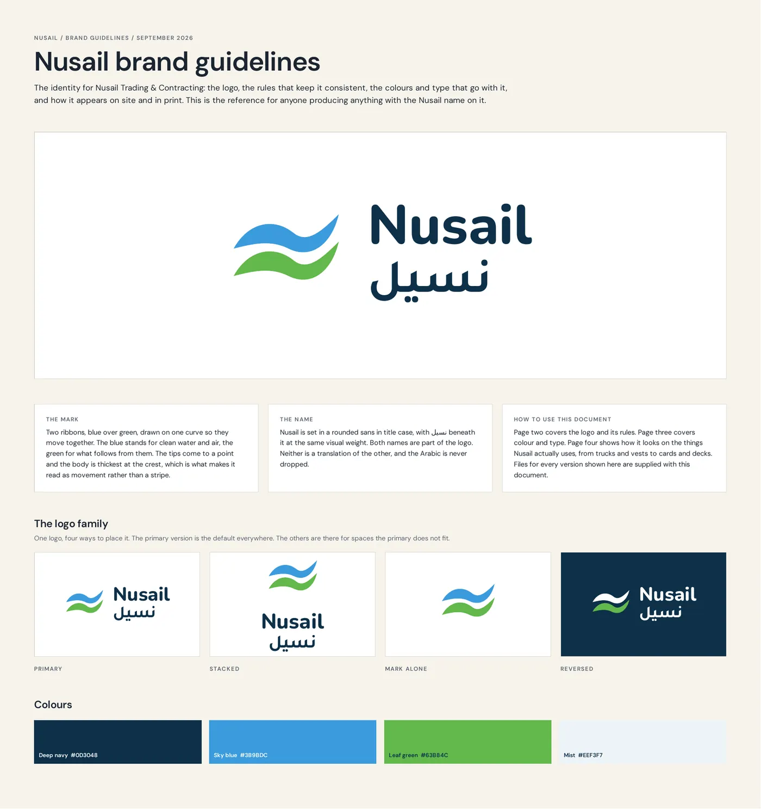
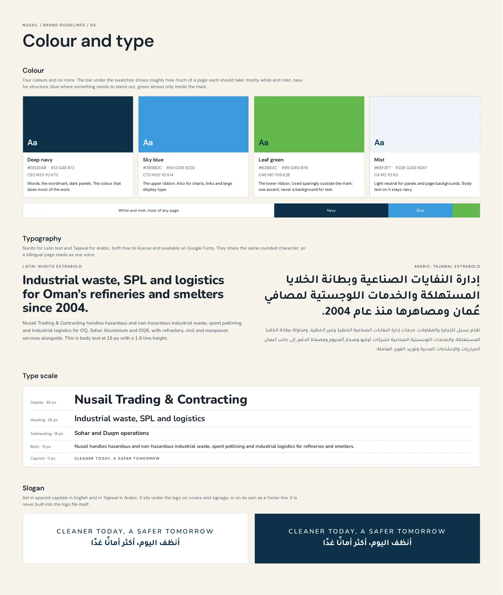
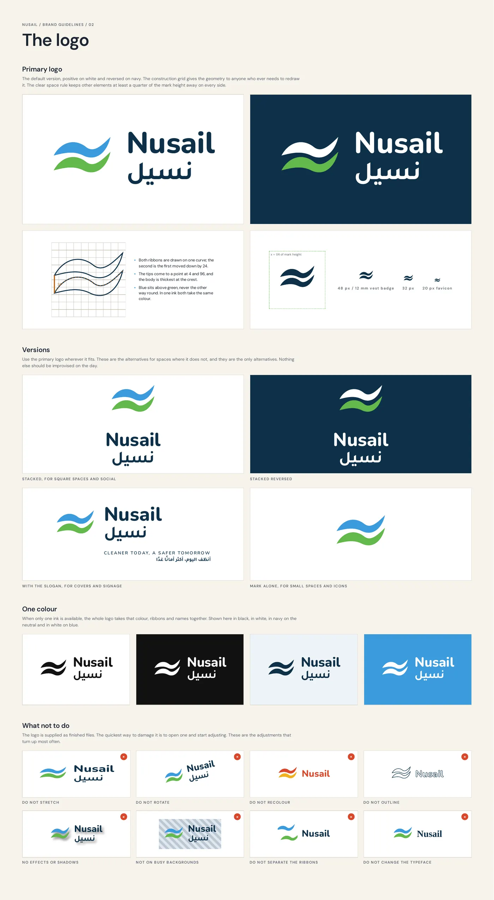
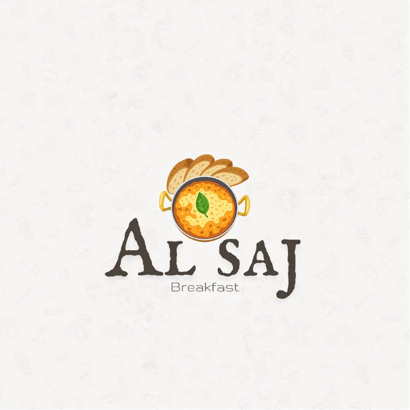
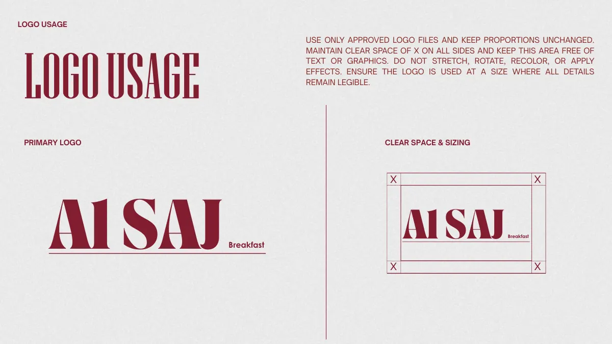
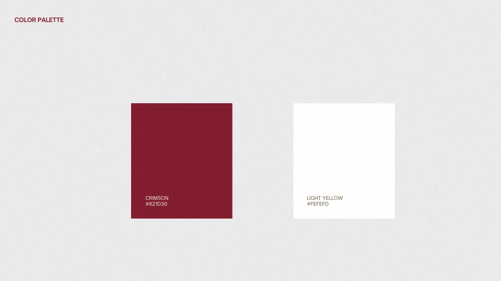
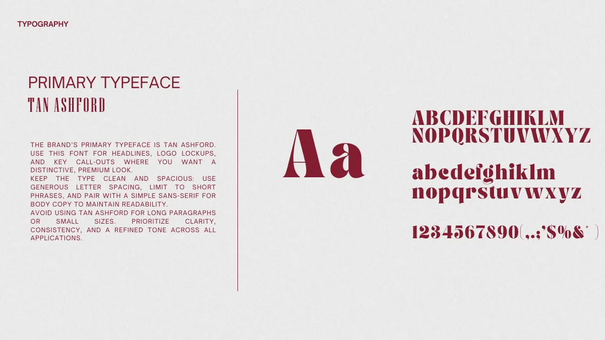
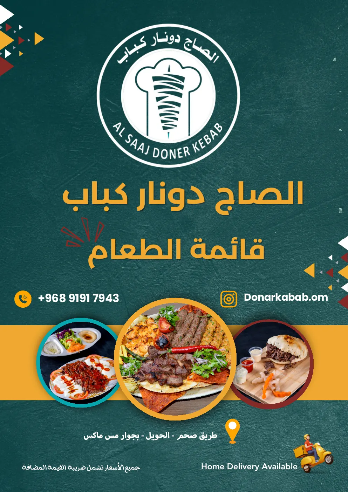
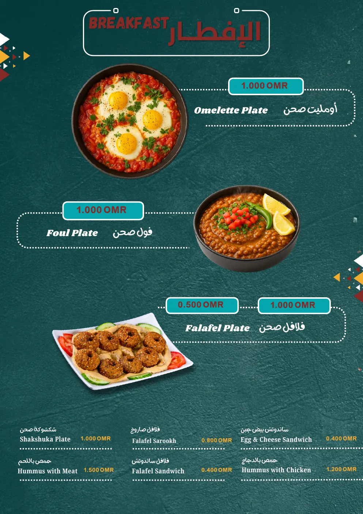
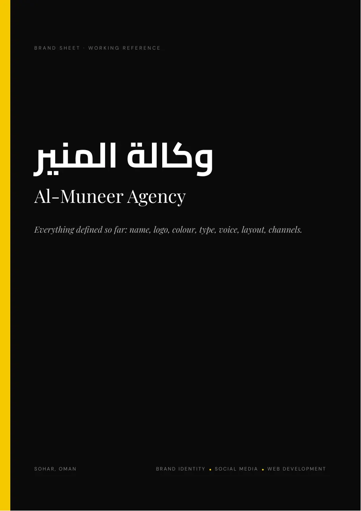

I do the research myself, and I make it look good.
I’m Research and Development Manager at Nusail Trading & Contracting, an industrial waste management and logistics contractor in Sohar. I head their new R&D function: new venture studies, the ISO management system documents, the rebrand and the material that goes to partners.
Before that I did business development and research for RSD, an Omani holding and venture company, and designed the documents that carried the work: feasibility studies, investor decks, partnership proposals and the brand itself. Earlier I spent five years in brand identity, graphic design, paid social and web development. With a Computer Science degree behind it, I’m as comfortable checking a financial model as laying out the report it goes in.
I live in Sohar, Oman. Arabic is my first language, my English is professional level (Duolingo English Test, 120), and I’m happy to work remotely.
14xInstagram views in 30 days, 26.1K to 368.2K
-35%cost per click after new creatives and tighter targeting
20Kpatient records moved out of a DOS program
11European buyers found and contacted for a gypsum export deal
what i do
Six things, and they feed each other.
Research and business development
Market and feasibility research with sources checked, not just quoted. Financial and technical document review, proposals, scopes of work and NDAs, and ISO 9001, 14001 and 45001 documentation.
Research notes, Excel models, buyer search
Brand and investor communications
Pitch decks, company profiles and investor presentations with the speaker notes to go with them. Brand guidelines and document styles, so everything a company sends out looks like it came from one place. Arabic and English.
Decks, profiles, guidelines, report templates
Design and brand identity
Logos, naming, colour, type, packaging, menus, social graphics and infographics. I usually start from nothing and carry it through to every place the brand shows up.
Photoshop, Illustrator, Canva
Websites and software
Business websites, landing pages, portfolio sites and small desktop tools. I design it, code it, host it and connect the domain. This site is one of mine.
HTML, CSS, JavaScript, Python, SQLite, Git
Marketing and paid social
Social accounts, Meta and Google Ads, content plans and campaigns. I care about cost per click, reach and bookings, not just whether it looks nice.
Meta Ads, Google Ads, Instagram, Facebook
Video and AI content
Reels and TikToks, commercial reels that mix real footage with AI-generated video, and voice over in Arabic and English. Watch the video ads
Premiere Pro, Kling, Veo 3, Seedance, Nano Banana
the path
Where I’ve worked so far.
2026 to nowSohar, Oman
Research and Development ManagerNusail Trading & Contracting, Sohar
I head the company’s new R&D function and report to the CEO. New venture studies, ISO management system documentation, the rebrand and partner materials, for an industrial waste and logistics contractor that serves OQ and Sohar Aluminium.
2026 to now
Founder and Creative LeadAl-Muneer Agency, Sohar
My own small digital marketing agency. Mostly food and beverage, hospitality and real estate clients in Oman, plus web design for clients in Germany.
May to August 2026
Business Development and Research ConsultantRSD, Oman and remote
Part-time retainer with an Omani holding and venture company in mining, investment and industrial technology. Business development, research and analysis, branding and communications.
2022 to now
Web Developer and DesignerFreelance, remote
Business websites, landing pages, portfolio sites and small software tools. Design, code and deployment.
2024 to May 2026
Head of Advertising and MarketingRif Majan, Sohar
In-house creative lead for two restaurant branches. I built the brand identity, menus and packaging, shot and edited the video, and ran the social accounts and paid campaigns.
2023 to 2024Egypt
Marketing ManagerRoaya Optical Center, Egypt
All the promotional materials and visual assets, plus events and outreach campaigns across their locations.
2021 to 2023
Head of Marketing DepartmentECHO Media Production Agency, Egypt
Ran the marketing department and its creative team, and took client projects from brief to delivery: scripts, pre-production, shooting and editing, across several accounts at once.
2019
Digital Marketing AssistantArrow for Advertising, Egypt
Helped run digital campaigns across social and paid platforms, and supported account management.
BSc Computer Science, M.E.T Academy, Egypt, 2022
Duolingo English Test, score 120
Arabic first language; voice over in Arabic and English
say hi
If you have a study to write, a deck to build or a brand to start, email me. I usually reply within a day.
A new R&D function, and a new face for the company
I head Nusail’s new R&D function and report to the CEO. For a partnership pitch I prepared the investment presentation, company profile, speaker notes and a growth roadmap built from their register of 39 contracts. Now I’m researching a possible plant in Oman for aluminium melt-treatment products, and writing the integrated ISO 9001, 14001 and 45001 documentation.
I also led the rebrand, from the first logo directions to the approved Arabic and English mark, with its colours, type and guidelines.

The guidelines, opening page

Colour and type, in Arabic and English

The mark and its versions
brand build and corporate site
RSD, from the name up
I named the company, wrote the brand guidelines, set up the document style and the research report pipeline, and designed and built the website. I also wrote their research notes on gas monetisation, industrial minerals, an AI and data hub, and farming in southern Oman.
A full publishing platform for an Arabic author, with a book store, a paid members’ library and a reader that works in the browser, and a corporate site for a venture company. Design, code, hosting, domain and SEO on both.
The logo, the colours, the type and a full style guide in Arabic and English, so every menu, post and sign comes out the same.

The logo

Logo usage

Colour

Type
print and delivery design
Menus for Al Saj Doner Kebab
Arabic menus for print and delivery apps: real food photography, prices you can read at a glance, and the branch details on every page.

The menu, front

Inside
my own agency
Al-Muneer Agency
I built its brand and portfolio site, then did the brand identities and content strategies for Hungr Station and Al Saj Breakfast. I also make commercial reels that mix live footage with AI-generated video, most recently for a date gelato brand and a luxury residential project.

The agency’s brand sheet
for RSD, Duqm
A Level 2 feasibility study for a new urea and ammonia plant
I co-wrote the study, built the investor presentations, wrote the port and logistics note, and drafted our reply when an outside reviewer pushed back. Then I helped set up the investor meeting that came after.
The study and its numbers belong to the client, so they stay off this page. I’m happy to talk through how it was put together.
software for healthcare
Clinic management system
A private clinic in Oman was still on a DOS program. I moved about 20,000 patients and 40,000 visits into a new desktop app that handles registration, consultations, prescriptions, audit logs and printing across the network.
It holds patient records, so there are no screenshots here.